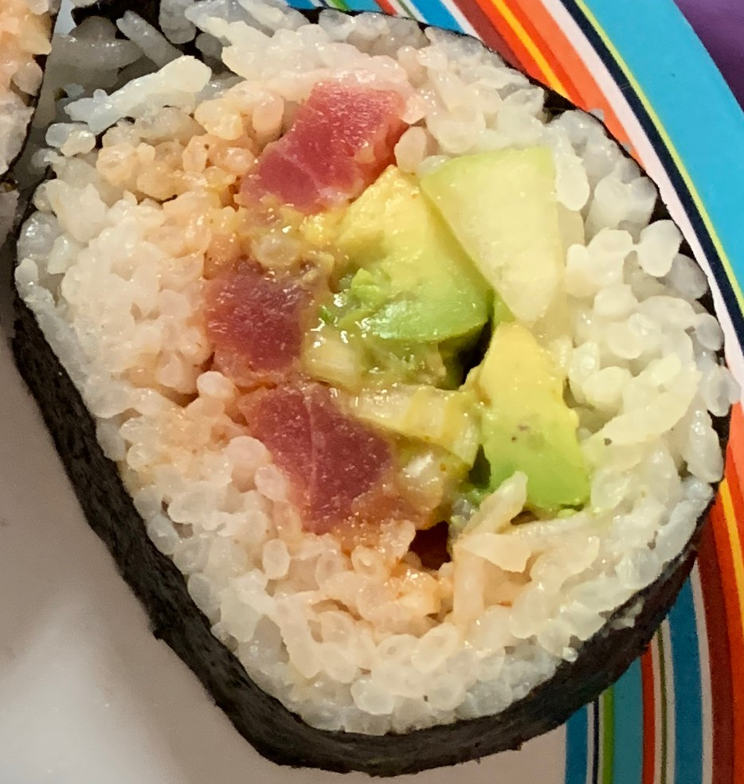

Spicy Tuna Maki

Ingredients
- 2 cups uncooked glutinous white rice
- 2 1/2 cups water
- 1 tablespoon rice vinegar
- 1 (5 ounce) can solid white tuna in water
- 1 tablespoon mayonnaise
- 1 teaspoon chili powder
- 4 sheets nori (dry seaweed)
- 2 tablespoons Wasabi paste
- ½ cucumber, finely diced
- 1 piece Bamboo Mat
- carrot, finely diced
- 1 avocado - peeled, pitted and diced